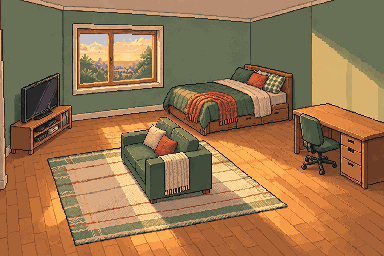

TV · venstre for vindauget
Står lågt mot veggen, med skjermen vend mot sofasona.
Livslina · intern plasseringsprøve
Prøve 03 set seng i bakre høgre hjørne, pult på høgre side, TV til venstre for vindauget og ein liten sofa midt i rommet. Alle hovudmøbla deler éi fast kameraretning og same golvplan.

Dette er ei ny, samla romillustrasjon på 384 × 256 pikslar. Ho fungerer som perspektivreferanse for dei neste separate møbelspritane.

Står lågt mot veggen, med skjermen vend mot sofasona.
Lita tosetar vend mot TV-en, med fri passasje rundt.
Hovudenden står mot høgre vegg; fotenden peikar inn mot rommet.
Står framfor sengeområdet med stolen vend inn mot rommet.
Kameraprofil: eitt lett opphøgd hjørneperspektiv, loddrette veggar, felles lys frå øvre venstre og møbelpivotar på same golvhøgd. Den gamle festeprøva under held fram med å teste korleis tilbehøyr flyttar seg når seng og pult blir større.
Denne separate tekniske testen brukar det førre rommet. Ho viser korleis feste følgjer seng og pult når storleiken blir bytt; ho er ikkje det nye romoppsettet ovanfor.
Alle variantar i same møbelfamilie deler kamera, framkant og lysretning. Ei spegelvending er ei uttrykkeleg mellombels metadataavgjerd, ikkje tilfeldig manuell flytting.
Skjerm og lampe høyrer til bordplata. Pute og pledd høyrer til senga. Når forelderen blir bytt, blir dei lokale festa rekna ut på nytt.
Større møblar reserverer fleire ruter. Spelet testar klaring mot vegg og andre møblar før kjøpet blir plassert, og forklarar kva som må flyttast.